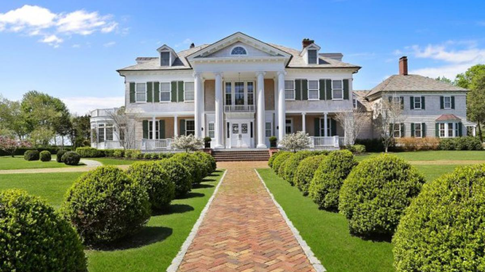

<ion-header [translucent]="true">
  <ion-toolbar>
    <ion-buttons slot="start">
      <ion-menu-button></ion-menu-button>
    </ion-buttons>
    <ion-title>Acerca De...x</ion-title>
  </ion-toolbar>
</ion-header>

<ion-content>
<h1>Universidad Politecnica Salesiana</h1>
<h1>Juan Barrera</h1>

<ion-card>
  
  <ion-card-header>
    <ion-card-subtitle>Destination</ion-card-subtitle>
    <ion-card-title>Madison</ion-card-title>
  </ion-card-header>

  <ion-card-content>
    Keep close to Nature's heart... and break clear away, once in awhile,
    and climb a mountain or spend a week in the woods. Wash your spirit clean.
  </ion-card-content>
</ion-card>

<ion-fab vertical="bottom" horizontal="end" slot="fixed">
    <ion-fab-button>
      <ion-icon name="arrow-forward-circle"></ion-icon>
    </ion-fab-button>
</ion-fab>

<ion-grid>
  <ion-row class="bordes">
    <ion-col>
      <div>
        1 of 2
      </div>
    </ion-col>
    <ion-col size="8">
      <div>
        2 of 2
      </div>
    </ion-col>
  </ion-row>
</ion-grid>

</ion-content>
